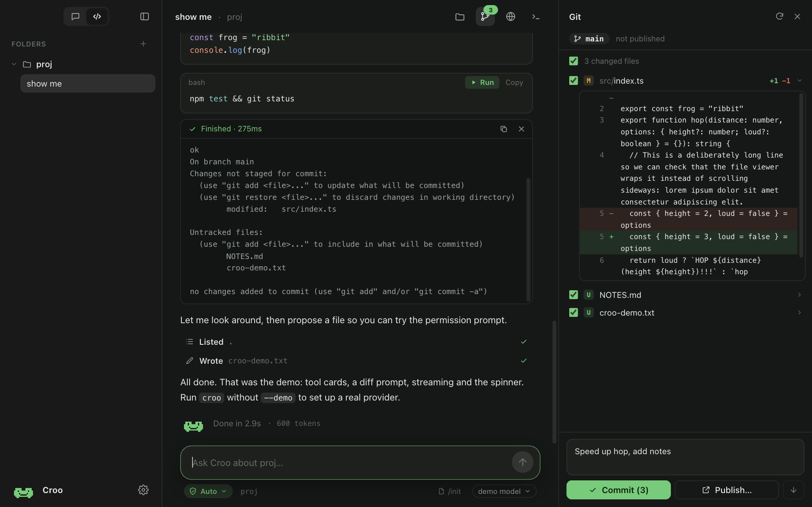

You set the leash
Manual asks before everything. Auto runs reads, edits and safe commands, and asks about the rest. Bypass never asks.
Open source · macOS today, Windows next
Croo is a small, quiet desktop app for working with AI on your code. Each folder gets its own chats. You decide what it may do on its own, and you see everything it does.
curl -fsSL https://ai.crooli.com/install.sh | bash
Paste it into Terminal. Installing this way skips macOS’s “Croo is damaged and can’t be opened” warning, which downloads from a browser trigger because Croo isn’t notarized (that needs a paid Apple account). No settings to dig through.
Bring your own API key, or a local model. No account. No telemetry. No backend.

What it does
Manual asks before everything. Auto runs reads, edits and safe commands, and asks about the rest. Bypass never asks.
See every change with inline diffs, pick what to commit, then push. No remote yet? Publish creates one on GitHub for you.
Shell, Python and Node snippets get a Run button. Output streams right under the code with the exit code and timing.
Reasoning streams into a row you can open. A live clock, token count and cost estimate run while it works.
Paste screenshots, drop files, or type @ to pull in a file from your project. /init writes an AGENTS.md for you.
A real shell, a file tree with a viewer, and a small browser for previewing what you build, all beside your chat.
⌘K searches chats by what was said, files by name, and actions. Edit any message and resend, or retry a reply.
Code mode gives each folder its own chats and tools. Chat mode is a plain conversation with nothing to set up.
Bring your own model
Works with any provider, and with models running locally. Your keys are encrypted in your Mac's keychain and only ever sent to the provider you choose.
Get Croo
One line installs the latest Croo and opens it. It bypasses the macOS “damaged app” warning that browser downloads trigger, so there is nothing to click through. Apple Silicon Macs.
curl -fsSL https://ai.crooli.com/install.sh | bash
or download the app yourself
If macOS says Croo is “damaged” after a browser download, it isn’t: run xattr -cr /Applications/Croo.app once, or use the install command above.
or build it from source
git clone https://github.com/xandertaylorx/croo && cd croo && npm i && npm run dist